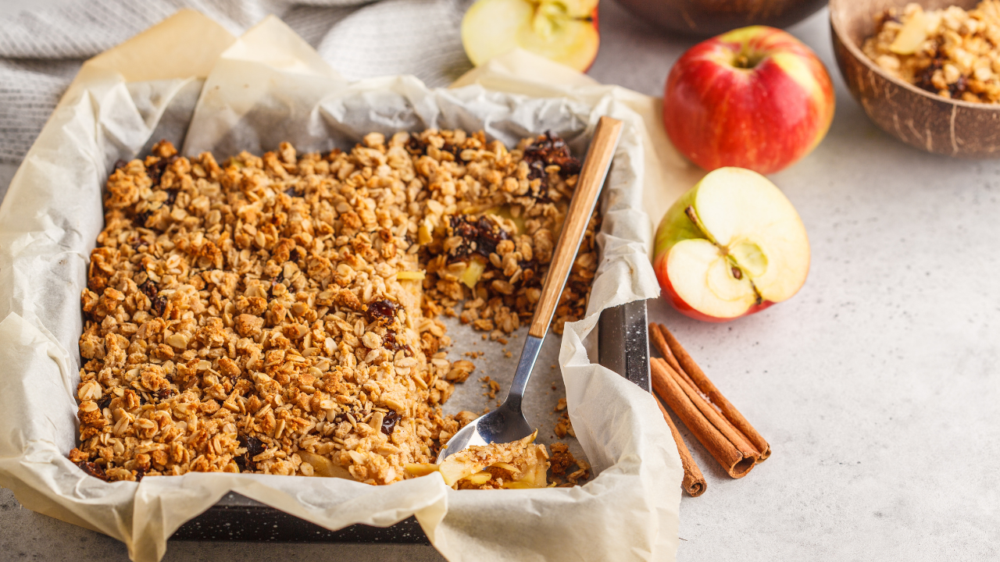

Apple Cinnamon Crumble
Prep time:
15 mins (+ 30 mins baking)
Yield:
6
Ingredients
For the filling:
4 medium apples, peeled and sliced
1/4 cup sugar
1 teaspoon cinnamon
For the topping:
1/2 cup all-purpose flour
1/2 cup rolled oats
1/4 cup brown sugar
1/4 cup melted butter
Steps
Preheat oven to 180°C (350°F). Grease a baking dish.
Toss apples with sugar and cinnamon, then place in the dish.
In a bowl, mix flour, oats, brown sugar, and melted butter until crumbly. Sprinkle over apples.
Bake for 30 minutes or until topping is golden and apples are tender.